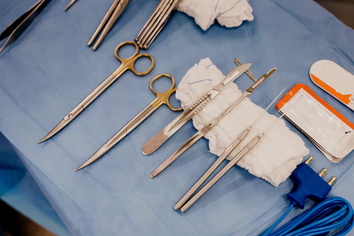
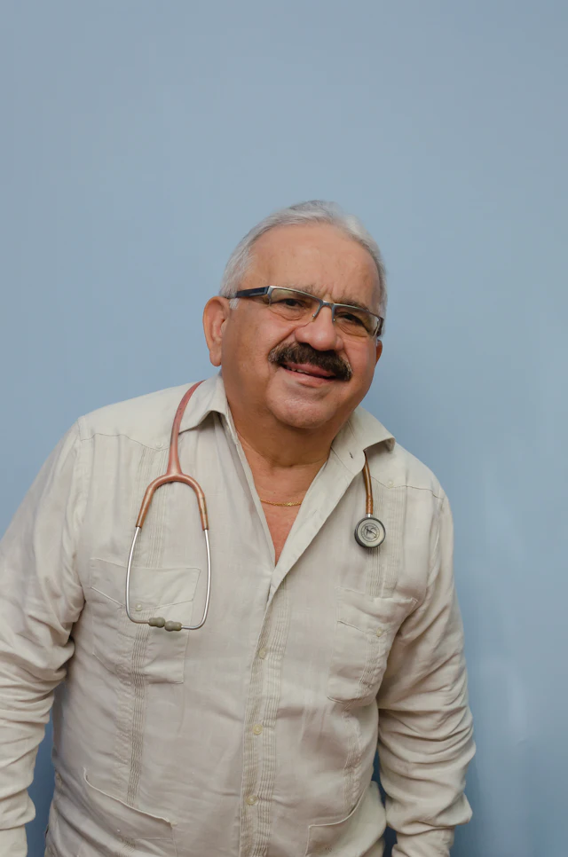
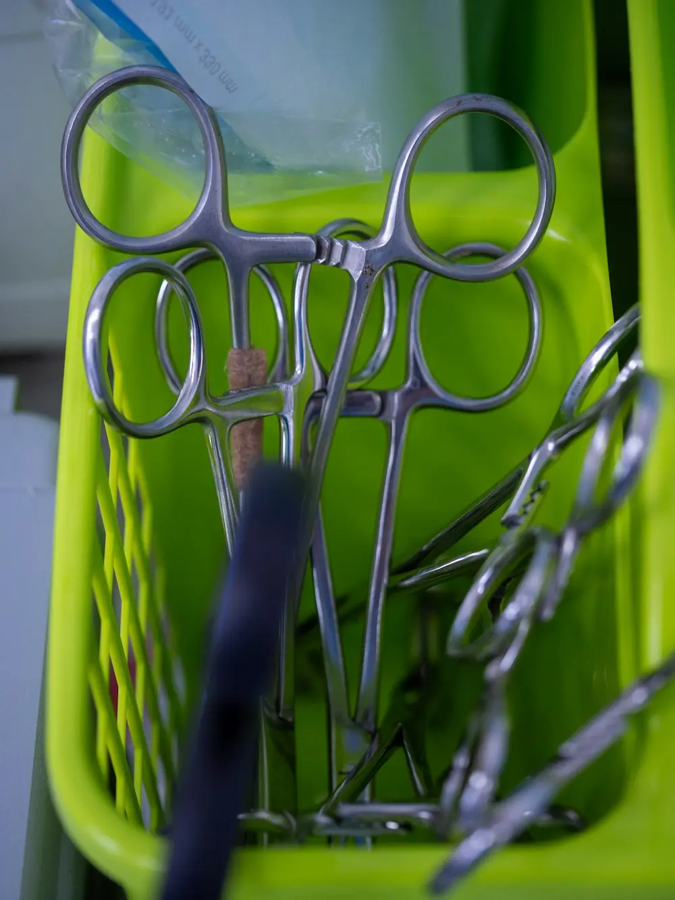
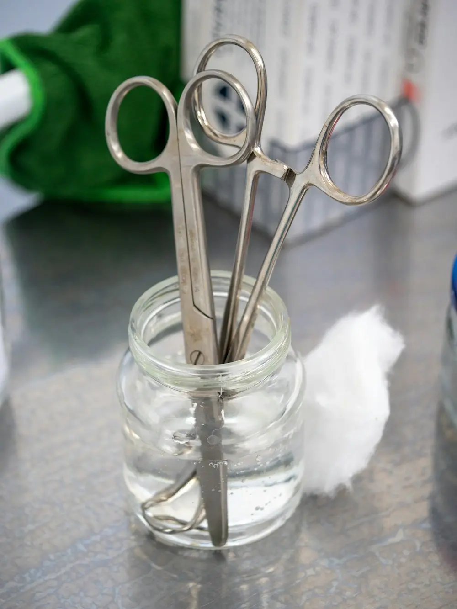

01
Prophylaxe und Zahnerhalt
Regelmäßige Kontrolle, professionelle Zahnreinigung und Füllungen. Auch für Kinder, mit Zeit und in verständlichen Worten.


Von der Kontrolle bis zum Zahnersatz in Musterstadt. Wir erklären jeden Schritt vorab und nennen die Kosten, bevor wir beginnen.
Anfrage in zwei Minuten, Antwort am nächsten Werktag (Beispiel). Zum Formular
Akute Beschwerden? Rufen Sie an: 0000 000 111 (Beispielnummer)
Mo bis Do 8 bis 18 Uhr, Fr 8 bis 14 Uhr (Beispiel)
Kontrolle, Reinigung, Füllung oder Zahnersatz: Sie erfahren vorher, was geplant ist, was es kostet und was auch warten kann.
Beispielwerte, nicht belegt. Beim Überfahren oder per Schalter hält das Band an.



Zwei Schwerpunkte, ein Team. Kinder, Notfälle und Beratung zu den Kosten gehören zu beiden.
Regelmäßige Kontrolle, professionelle Zahnreinigung und Füllungen. Auch für Kinder, mit Zeit und in verständlichen Worten.
Kronen, Brücken und Prothesen, geplant mit Kostenvoranschlag vorab. Sie erfahren die Möglichkeiten, Sie entscheiden.
Ein kleines Team, das Sie beim Namen kennt. Damit Sie wissen, wer Sie am Stuhl erwartet.



Beispielnamen und Beispielrollen, die Fotos zeigen Stockpersonen. Je Praxis durch das echte Team ersetzen.
Wir erklären vor jedem Schritt, was wir tun, und fragen nach, ob alles klar ist.
Sie bekommen einen Plan mit Eigenanteil, bevor die Behandlung beginnt.
Ein Handzeichen genügt, dann machen wir eine Pause. Sprechen Sie uns vorab an.
Termine für Eltern und Kinder lassen sich hintereinander legen.


Ich hatte lange Angst vor dem Zahnarzt. Hier wurde mir jeder Schritt vorher erklärt, und ich durfte jederzeit stoppen.

Den Kostenplan für meine Krone habe ich vorab bekommen, mit Eigenanteil. So konnte ich in Ruhe entscheiden.

Beide Kinder hatten an einem Vormittag Termin, nacheinander. Das hat uns viel Organisation erspart.
Beispielstimmen, keine echten Bewertungen. Je Praxis nur mit Einwilligung durch echte ersetzen.


Die häufigsten Antworten stehen hier. Alles Weitere klären wir gern persönlich.
Rufen Sie an oder fragen Sie einen Termin an, wir melden uns.
Eine Kontrolle und die medizinisch notwendige Versorgung sind in der Regel Kassenleistung. Bei Zahnersatz gibt es einen Festzuschuss, den Eigenanteil nennen wir Ihnen vorab im Kostenplan. Beispielantwort, je Praxis und Kasse anpassen.
Sagen Sie es uns beim Termin oder schon bei der Anfrage. Wir erklären jeden Schritt, vereinbaren ein Handzeichen für eine Pause und besprechen mit Ihnen mögliche Wege, die Behandlung angenehmer zu gestalten. Beispielantwort, je Praxis anpassen.
Rufen Sie uns während der Sprechzeiten an, wir halten täglich Plätze für akute Fälle frei. Außerhalb der Sprechzeiten hilft der zahnärztliche Notdienst, bei starken Schwellungen oder nach einem Unfall der Rettungsdienst unter 112. Beispielantwort, je Praxis anpassen.
Wir trennen klar zwischen dem, was die Kasse übernimmt, und dem, was Sie freiwillig dazuwählen können. Zusatzleistungen gibt es nur nach Ihrer Zustimmung, mit Preis vorab. Beispielantwort, je Praxis anpassen.
Sie fragen online oder per Telefon an und bekommen von uns einen Terminvorschlag. Eine erste Kontrolle planen wir mit etwa 40 Minuten, damit Zeit für Ihre Fragen bleibt. Beispielantwort, je Praxis anpassen.
Schildern Sie kurz Ihr Anliegen. Wir melden uns mit einem Terminvorschlag. Bei akuten Beschwerden rufen Sie bitte direkt an, das Formular ist dafür zu langsam.